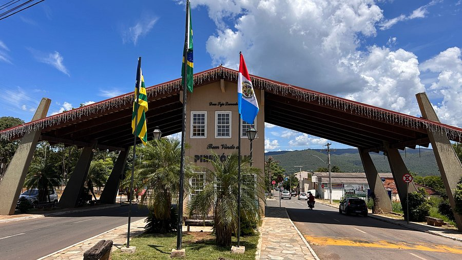

Pirenópolis é uma pequena cidade turística do interior do estado de Goiás conhecida por sua forte ligação com a história colonial brasileira, pela cultura, por sua rica paisagem e também pela hospitalidade de seus habitantes.
A cidade é vasta em arquitetura antiga, monumentos históricos, restaurantes e bares, e seus arredores são cercados por uma vegetação exuberante, cachoeiras e outras maravilhas do cerrado basileiro.
Além disso, Pirenópolis é lembrada como uma das cidades brasileiras que são tombadas, ou seja, é declarada como um patrimônio histórico e cultural do Brasil, o que reforça a importância do local para a história e cultura do nosso país.
O período ideal para se visitar vai de maio até agosto, durante a estação seca, quando os dias são ensolarados e as águas das cachoeiras estão mais limpas e cristalinas.
Neste guia separamos todas as informações sobre a cidade de Pirenópolis (GO), desde seus pontos turísticos, história, culinária e muito mais.